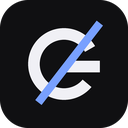

Welcome to Grok Browser
Ask about the page, PDF or book you're reading, right from a side panel next to it.
- ◎Knows what's on screenYour selection, the visible text and the whole page go with each question.
- ▤PDF-awareA screenshot of the viewer tells it which page you're on, so “explain this page” just works.
- ⇄Your bot, your relayQuestions go to your own Grok Bot through a relay on your own Cloudflare account, or straight to xAI with your key.
Community project, not affiliated with or endorsed by xAI. Setup takes about 5 minutes.
How should it answer?
You can switch later in Settings.
Paste this to your Grok Bot
Open a chat with your Grok Bot and paste this prompt. It creates a “Grok Browser” webhook routine and replies with the routine's webhook URL and key. Keep that chat open.
Deploy your relay
A small, free Cloudflare Worker that holds your webhook key and passes questions to your bot. Pick one way:
Signs you in to Cloudflare, generates the tokens, asks for the webhook URL and key, deploys, and writes a settings file you can import in the next step.
git clone https://github.com/dafikabukcu/grok-browser && cd grok-browser && npm run setupThe Cloudflare form asks for four secrets: the two tokens below, plus the webhook URL and key from your bot.
Generated in this browser and kept only until you close it. EXT_TOKEN is filled in for you on the next screen.
Connect this extension
Paste your relay's URL and EXT_TOKEN, or import the settings file that npm run setup wrote (relay/grok-browser-settings.json).
Give your bot the relay URL and reply token
Go back to the chat with your Grok Bot and send this. It asks for both values with a secure secret request and saves them on its computer.
My Grok Browser relay is deployed. Ask me for the relay URL and reply token with a secure secret request.Test the connection
This sends a test ping through your relay. Your Grok Bot should answer “pong”.
Add your xAI API key
Create a key at console.x.ai → API Keys. It's stored only in this browser (chrome.storage.local) and sent only to api.x.ai.
Model and reasoning effort
Test your key
This sends one tiny request to the xAI API.
Page access
Grok Browser reads the tab you ask about and, for PDFs, takes a screenshot of it. Check that it's allowed to:
You're all set
Open Grok Browser on any tab: